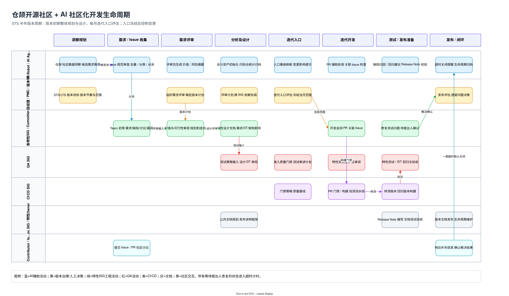
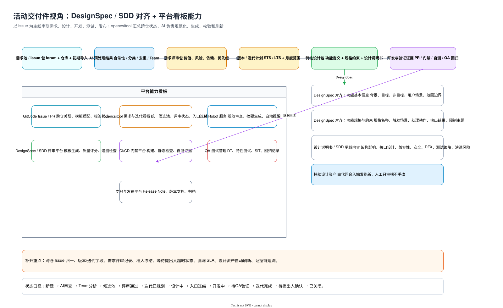

| 角色 | 主要职责 | 关键输出 |
|---|---|---|
| 项目经理 / PMC / 版本 SE | 版本目标、需求评审、迭代入口、发布评估 | 版本计划、评审结论、准入准出记录 |
| 各特性 SIG / Committer | Issue 分析、设计、编码、检视、领域质量看护 | 特性设计包、PR、自测证据、修复记录 |
| QA / CI/CD / Doc SIG | 测试设计、门禁构建、SIT、回归、Release Note 和公共文档 | 转测版本、测试报告、发布说明、版本文档 |
| Contributor / AI Robot | 社区反馈、代码贡献、自动审查、摘要、提醒和资产刷新 | Issue、PR、分类结果、评审摘要、巡检记录 |
Cangjie Community Operating Model
仓颉开源社区 AI 协同开发流程活动指导书
面向 GitCode 社区协作，把需求、Issue、设计、开发、测试、发布和生命周期维护连成统一活动链路。
半年 STS 版本周期
版本初期做整体洞察和设计，每月迭代入口做范围评估
入口冻结后控制范围变更。最新社区 Issue、漏洞事项和已规划内容进入下一次入口统一审视。
AI 嵌入活动出口
AI 负责审查、摘要、生成、校验、提醒和资产刷新
人工保留价值判断、范围冻结、评审结论和发布决策，避免把治理责任交给自动化。
Scope
目标是统一入口、状态、证据链和看板
入口统一
forum、特性仓、版本导入、漏洞跟踪项进入同一候选池。
状态统一
从新建到关闭的状态标签可被人和 AI 同时理解。
证据统一
Issue 关联设计包、PR、自测、构建、测试和发布结论。
看板统一
opencsitool 聚合跨仓、跨 SIG、跨平台的版本视图。
Lifecycle
角色泳道生命周期

Roles
关键角色分工
Issue State
Issue 以状态模型承载社区治理
输入来源
社区 forum、具体特性仓、版本初期导入、漏洞跟踪项。
类型判断
需求、缺陷、讨论、漏洞。需求与缺陷进入候选池，讨论以答复闭环为主。
超时规则
等待提出人补充或确认时开始计时，一周无答复默认关闭。
推荐状态口径
新建 → AI 审查 → 待补充 → Team 分析 → 候选池 → 评审通过 → 迭代已规划 → 设计中 → 入口冻结 → 开发中 → 待 QA 验证 → 迭代完成 → 待提出人确认 → 已关闭。
Deliverables
交付件与平台能力

DesignSpec / SDD
设计包对齐 DesignSpec 与 SDD
功能定义
基本信息
背景、目标、非目标、用户场景、范围边界。
规格约束
验收口径
触发场景、处理动作、输出结果、边界条件。
设计说明书
工程影响
架构影响、接口、兼容、安全、DFX、测试策略和风险。
Platform
平台组合与补齐重点
| 平台 | 定位 | 补齐重点 |
|---|---|---|
| GitCode Issue / PR | 承载社区反馈、代码贡献和检视 | 跨仓归一、模板适配、PR 强关联、自测证据 |
| opencsitool | 版本和迭代治理总看板 | 候选池、需求评审、入口冻结、漏洞 SLA、跨 SIG 依赖 |
| AI Robot / Agent | 自动审查、生成、校验、提醒 | 分类分派、评审摘要、设计评分、状态巡检 |
| CI/CD、QA、文档平台 | 构建、测试、回归、发布文档 | 转测版本、回归记录、Release Note 验证、生命周期归档 |
Gates
准入准出让迭代边界可控
迭代准入
范围冻结
关键设计通过评审，漏洞和高优缺陷有处置计划，QA 与 CI/CD 输入可执行。
测试准入
证据齐备
串讲完成、测试设计完成、转测版本构建成功、PR 与 Issue 关联完整。
发布准出
风险收敛
计划 Issue 解决程度、SIT、回归、Release Note、版本文档和 PMC 审核结论满足要求。
Roadmap
落地优先级
第一阶段：状态口径和最小看板
统一 Issue 类型、标签、等待提出人状态、迭代字段和 PR 关联要求。
第二阶段：AI Robot 能力
上线模板审查、分类分派、评审摘要、超时提醒、设计评分和 Release Note 校验。
第三阶段：证据链贯通
以 Issue 为主键串联需求评审、DesignSpec/SDD、PR、构建、测试、发布和归档。